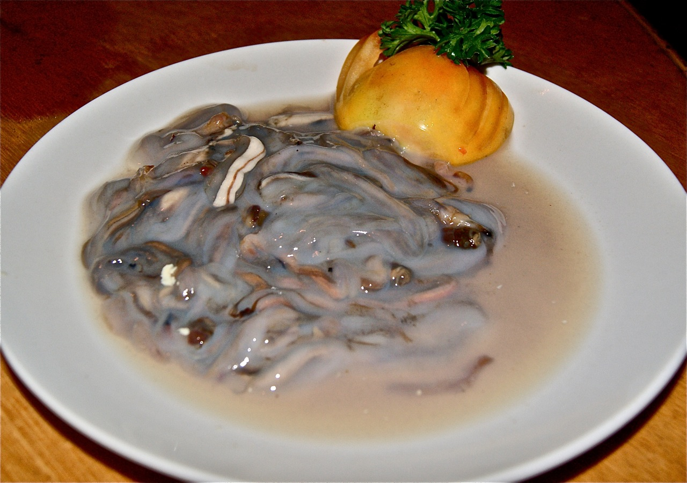

Let's find out.
BINAkOL NA MANOK

Binakol, a Filipino dish originates from the Western Visayas, particularly the province of Aklan. Also spelled binakoe, other alternative names are chicken binakol or the binakol na manok. Traditionally cooked inside bamboo tubes or directly on halved coconut shells. Chicken soup is made from chicken cooked in coconut water with grated coconut, green papaya (or chayote), leafy vegetables, garlic, onion, ginger, lemongrass, and patis (fish sauce). It can also be spiced with chilis. Binakol can also be cooked with other kinds of meat or seafood.
INUBARANG MANOK

Inubarang Manok is a dish that’s popular in Visayan regions like Iloilo, Aklan, and Negros. The star of this stew is the ubad, which is the pith of a banana tree. This is not to be confused with ubod, which is its coconut counterpart. Chicken and ubad is a usual pairing, and it lends the dish a unique flavor and texture.
LINAPAY

Linapay is made from pounded small Aklanon shrimp (not alamang) seasoned with garlic, onion, ginger, chili, and tender 'batwan' fruit wrapped in young 'gabi' leaves and cooked in coconut milk. The difference in this meal is that the 'ueang' (pounded small shrimps) are wrapped in fresh taro leaves and cooked in coconut milk. Its ingredients are plentiful across Aklan. It's commonly offered at fiestas or in restaurants near the wet market. It's not only tasty, but it's also inexpensive, and it goes well with freshly made steaming rice. That is why the Linapay is so popular among Aklanons.
TAMILOK
Tamilok is also known as Shipworm and is eaten as a delicacy there. It is prepared as kinilaw—raw (cleaned) but marinated with lime juice or vinegar, chopped onions, and chili peppers, a process very similar to ceviche (kinilaw). The taste of the flesh has been compared to a wide variety of foods, from milk to oysters.